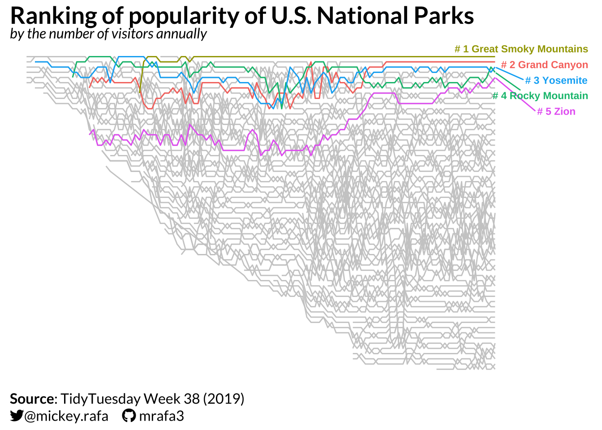
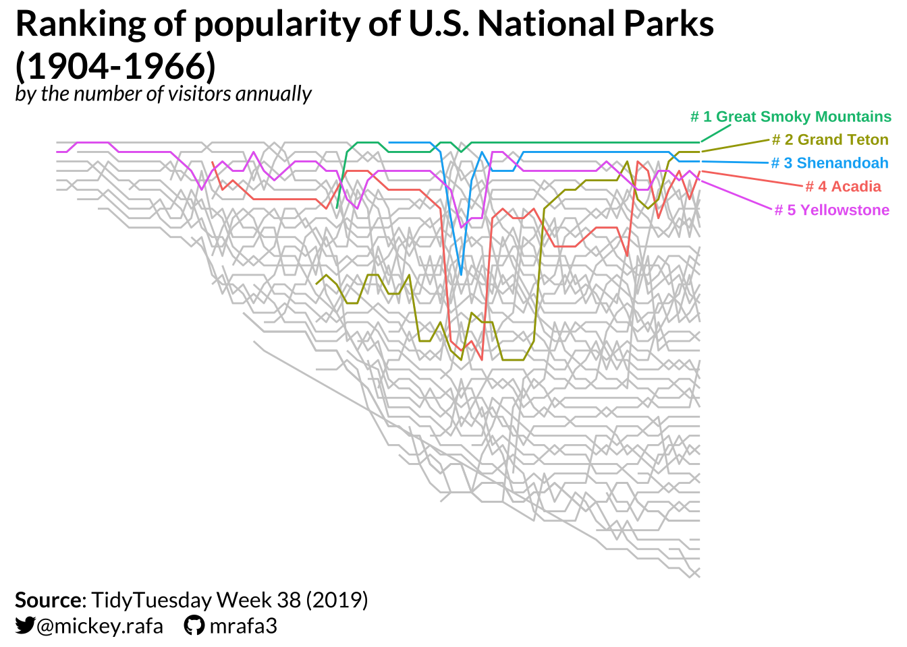
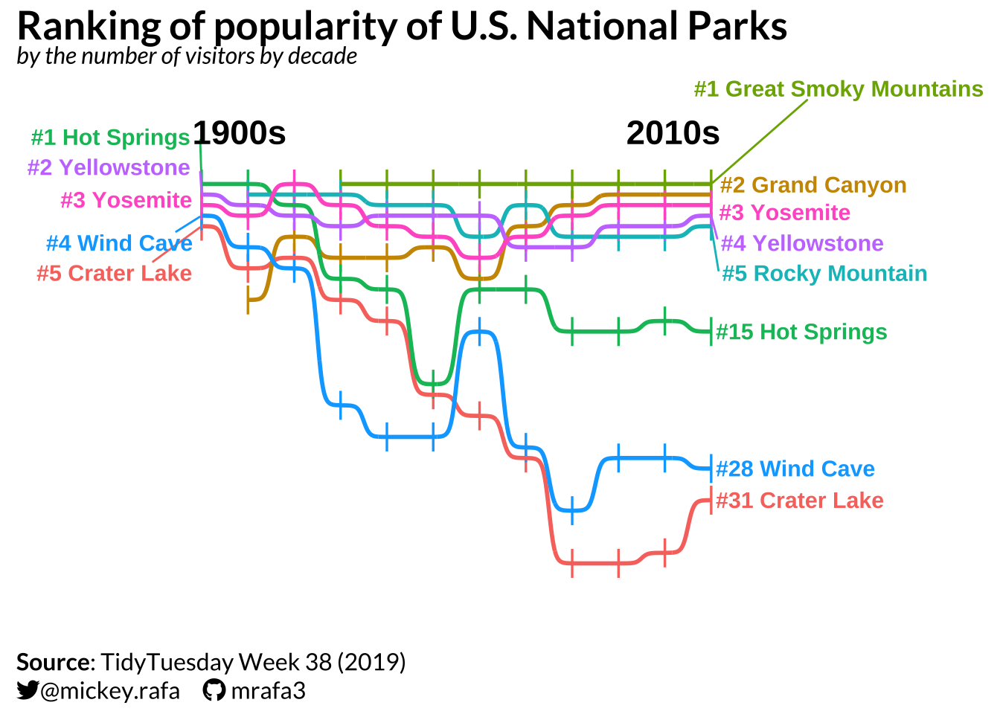
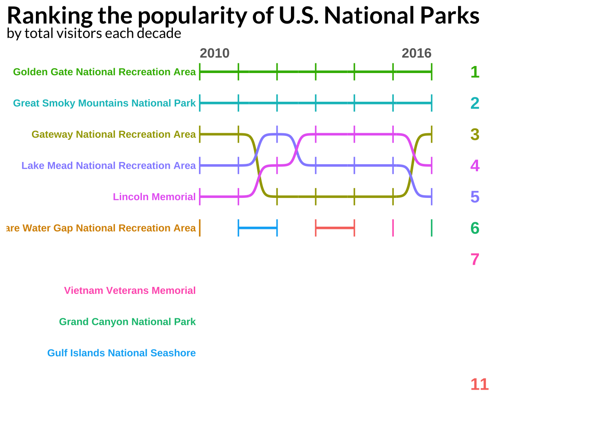
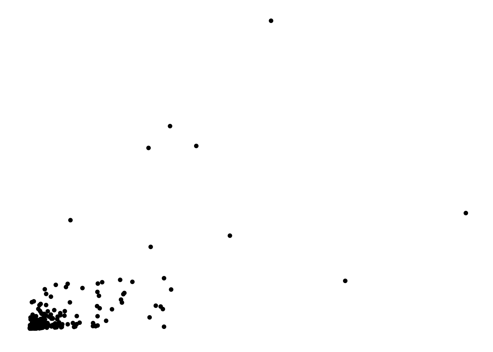

library(tidyverse)
library(tidytuesdayR)
library(scales)
library(extrafont)
library(glue)
library(patchwork)
library(ggtext)
library(ggbump)
library(gghighlight)
library(sysfonts)
library(showtext)
library(gt)
library(gtExtras) #for font awesome icons in gt tables
library(janitor) #for clean_names()
library(htmltools) #for tagList()Setup
# First argument = name in R
# Second argument = path to .otf-file
#font_add('fa-reg', 'fonts/Font Awesome 6 Free-Regular-400.otf')
font_add('fa-brands', 'fonts/Font Awesome 6 Brands-Regular-400.otf')
#font_add('fa-solid', 'fonts/Font Awesome 6 Free-Solid-900.otf')sysfonts::font_add_google("Lato","lato")
showtext::showtext_auto()
showtext::showtext_opts(dpi=300)my.theme <- theme(
text = element_text(family = 'lato'),
plot.title = element_textbox_simple(color="black", face="bold", size=20, hjust=0),
plot.subtitle = element_textbox_simple(color="black", size=12, hjust=0),
axis.title = element_blank(),
axis.text = element_blank(),
axis.ticks = element_blank(),
axis.line = element_blank(),
plot.caption = element_textbox_simple(color="black", size=12),
panel.background = element_blank(),
panel.grid.major = element_blank(),
panel.grid.minor = element_blank(),
panel.border = element_blank(),
legend.title=element_blank(),
legend.text = element_text(color="black", size=12, hjust=0),
legend.position = 'top',
strip.text = element_text(color="black", size=14))tuesdata <- tidytuesdayR::tt_load(2019, week = 38)---- Compiling #TidyTuesday Information for 2019-09-17 ----
--- There are 3 files available ---
── Downloading files ───────────────────────────────────────────────────────────
1 of 3: "gas_price.csv"
2 of 3: "national_parks.csv"Warning: One or more parsing issues, call `problems()` on your data frame for details,
e.g.:
dat <- vroom(...)
problems(dat)3 of 3: "state_pop.csv"df <- tuesdata$national_parksdf %>%
summary() year gnis_id geometry metadata
Length:21560 Min. : 2877 Length:21560 Length:21560
Class :character 1st Qu.: 401309 Class :character Class :character
Mode :character Median :1009494 Mode :character Mode :character
Mean :1070863
3rd Qu.:1530459
Max. :2775865
NA's :2
number_of_records parkname region state
Min. :1 Length:21560 Length:21560 Length:21560
1st Qu.:1 Class :character Class :character Class :character
Median :1 Mode :character Mode :character Mode :character
Mean :1
3rd Qu.:1
Max. :1
unit_code unit_name unit_type visitors
Length:21560 Length:21560 Length:21560 Min. : 0
Class :character Class :character Class :character 1st Qu.: 39125
Mode :character Mode :character Mode :character Median : 155219
Mean : 1277105
3rd Qu.: 608144
Max. :871922828
NA's :4 Annual, bump chart
(df_annual <- df %>%
filter(year != 'Total',
unit_type == 'National Park') %>%
mutate(year = as.numeric(year)) %>%
mutate(decade = as.factor(year - (year %% 10))) %>%
arrange(year) %>%
group_by(year) %>%
mutate(annual_visitor_rank = as.integer(rank(-visitors))) %>%
select(annual_visitor_rank, year, unit_name, visitors, everything()) %>%
arrange(year, annual_visitor_rank) %>%
ungroup())# A tibble: 4,682 × 14
annual_visitor_rank year unit_name visitors gnis_id geometry metadata
<int> <dbl> <chr> <dbl> <dbl> <chr> <chr>
1 1 1904 Hot Springs Nat… 101000 56796 MULTIPO… http://…
2 2 1904 Yellowstone Nat… 13727 1609331 POLYGON http://…
3 3 1904 Wind Cave Natio… 2900 1263056 MULTIPO… http://…
4 4 1904 Crater Lake Nat… 1500 1163670 POLYGON <NA>
5 5 1904 Kings Canyon Na… 1000 255948 MULTIPO… http://…
6 6 1904 Mount Rainier N… 563 1528416 MULTIPO… http://…
7 1 1905 Hot Springs Nat… 109000 56796 MULTIPO… http://…
8 2 1905 Yellowstone Nat… 26188 1609331 POLYGON http://…
9 3 1905 Wind Cave Natio… 2438 1263056 MULTIPO… http://…
10 4 1905 Crater Lake Nat… 1400 1163670 POLYGON <NA>
# ℹ 4,672 more rows
# ℹ 7 more variables: number_of_records <dbl>, parkname <chr>, region <chr>,
# state <chr>, unit_code <chr>, unit_type <chr>, decade <fct>(highlight_list_annual <- df_annual %>%
filter(year ==2016,
annual_visitor_rank <=5) %>%
pull(unit_name))[1] "Great Smoky Mountains National Park" "Grand Canyon National Park"
[3] "Yosemite National Park" "Rocky Mountain National Park"
[5] "Zion National Park" title <- tagList(p('Ranking of popularity of U.S. National Parks'))
subtitle <- tagList(span('*by the number of visitors annually*'))
caption <- paste0("<span style='font-family:lato;'>**Source**: TidyTuesday Week 38 (2019)</span><br>",
"<span style='font-family:fa-brands;'></span>",
"<span style='font-family:lato;'>@mickey.rafa</span>",
"<span style='font-family:lato;color:white;'>....</span>",
"<span style='font-family:fa-brands;'></span>",
"<span style='font-family:lato;color:white;'>.</span>",
"<span style='font-family:lato;'>mrafa3</span>")(df_annual <- df_annual %>%
separate(col=unit_name, into = c("parkname_full", "parktype"), sep = "National Park",
remove=FALSE))Warning: Expected 2 pieces. Missing pieces filled with `NA` in 95 rows [208, 229, 252,
275, 297, 319, 341, 365, 390, 415, 442, 469, 497, 528, 561, 594, 629, 664, 703,
741, ...].# A tibble: 4,682 × 16
annual_visitor_rank year unit_name parkname_full parktype visitors gnis_id
<int> <dbl> <chr> <chr> <chr> <dbl> <dbl>
1 1 1904 Hot Spring… "Hot Springs… "" 101000 56796
2 2 1904 Yellowston… "Yellowstone… "" 13727 1609331
3 3 1904 Wind Cave … "Wind Cave " "" 2900 1263056
4 4 1904 Crater Lak… "Crater Lake… "" 1500 1163670
5 5 1904 Kings Cany… "Kings Canyo… "" 1000 255948
6 6 1904 Mount Rain… "Mount Raini… "" 563 1528416
7 1 1905 Hot Spring… "Hot Springs… "" 109000 56796
8 2 1905 Yellowston… "Yellowstone… "" 26188 1609331
9 3 1905 Wind Cave … "Wind Cave " "" 2438 1263056
10 4 1905 Crater Lak… "Crater Lake… "" 1400 1163670
# ℹ 4,672 more rows
# ℹ 9 more variables: geometry <chr>, metadata <chr>, number_of_records <dbl>,
# parkname <chr>, region <chr>, state <chr>, unit_code <chr>,
# unit_type <chr>, decade <fct>(plot_viz_538 <- df_annual %>%
ggplot(.,
aes(x=year,
y=-annual_visitor_rank,
group=unit_name,
color=unit_name)) +
geom_line(color='gray80') +
geom_line(data=. %>% filter(unit_name %in% highlight_list_annual)) +
ggrepel::geom_text_repel(
data = df_annual %>% filter(year == 2016, unit_name %in% highlight_list_annual),
aes(label = paste("#", annual_visitor_rank, parkname_full)),
nudge_x = 15,
size = 3,
direction = 'y',
fontface = 'bold'
) +
labs(x='',
title = title,
subtitle = subtitle,
caption = caption) +
coord_cartesian(xlim = c(1900, 2040), ylim = c(-65, 2), expand = F) +
my.theme +
theme(legend.position = 'none'))
# ggsave(".//visualizations/12-30-2022-tt-wk38-2019/plot_viz_538.png", plot_viz_538,
# width = 12, height = 8, dpi = 300)Modern vs. Premodern
(df_premodern <- df_annual %>%
filter(year <= 1966))# A tibble: 1,803 × 16
annual_visitor_rank year unit_name parkname_full parktype visitors gnis_id
<int> <dbl> <chr> <chr> <chr> <dbl> <dbl>
1 1 1904 Hot Spring… "Hot Springs… "" 101000 56796
2 2 1904 Yellowston… "Yellowstone… "" 13727 1609331
3 3 1904 Wind Cave … "Wind Cave " "" 2900 1263056
4 4 1904 Crater Lak… "Crater Lake… "" 1500 1163670
5 5 1904 Kings Cany… "Kings Canyo… "" 1000 255948
6 6 1904 Mount Rain… "Mount Raini… "" 563 1528416
7 1 1905 Hot Spring… "Hot Springs… "" 109000 56796
8 2 1905 Yellowston… "Yellowstone… "" 26188 1609331
9 3 1905 Wind Cave … "Wind Cave " "" 2438 1263056
10 4 1905 Crater Lak… "Crater Lake… "" 1400 1163670
# ℹ 1,793 more rows
# ℹ 9 more variables: geometry <chr>, metadata <chr>, number_of_records <dbl>,
# parkname <chr>, region <chr>, state <chr>, unit_code <chr>,
# unit_type <chr>, decade <fct>(df_modern <- df_annual %>%
filter(year > 1966))# A tibble: 2,879 × 16
annual_visitor_rank year unit_name parkname_full parktype visitors gnis_id
<int> <dbl> <chr> <chr> <chr> <dbl> <dbl>
1 1 1967 Great Smok… "Great Smoky… "" 6710100 1018241
2 2 1967 Grand Teto… "Grand Teton… "" 2643700 1597571
3 3 1967 Yosemite N… "Yosemite " "" 2238300 255923
4 4 1967 Yellowston… "Yellowstone… "" 2210000 1609331
5 5 1967 Shenandoah… "Shenandoah " "" 2133100 1488805
6 6 1967 Acadia Nat… "Acadia " "" 2102000 578853
7 7 1967 Hot Spring… "Hot Springs… "" 1981300 56796
8 8 1967 Rocky Moun… "Rocky Mount… "" 1915200 204948
9 9 1967 Olympic Na… "Olympic " "" 1905300 1530459
10 10 1967 Mount Rain… "Mount Raini… "" 1805900 1528416
# ℹ 2,869 more rows
# ℹ 9 more variables: geometry <chr>, metadata <chr>, number_of_records <dbl>,
# parkname <chr>, region <chr>, state <chr>, unit_code <chr>,
# unit_type <chr>, decade <fct>(highlight_list_premodern <- df_premodern %>%
filter(year == 1966,
annual_visitor_rank <=5) %>%
pull(unit_name))[1] "Great Smoky Mountains National Park" "Grand Teton National Park"
[3] "Shenandoah National Park" "Acadia National Park"
[5] "Yellowstone National Park" title_premodern <- tagList(p('Ranking of popularity of U.S. National Parks (1904-1966)'))(plot_viz_premodern <- df_premodern %>%
ggplot(.,
aes(x=year,
y=-annual_visitor_rank,
group=unit_name,
color=unit_name)) +
geom_line(color='gray80') +
geom_line(data=. %>% filter(unit_name %in% highlight_list_premodern)) +
ggrepel::geom_text_repel(
data = df_premodern %>% filter(year == 1966, unit_name %in% highlight_list_premodern),
aes(label = paste("#", annual_visitor_rank, parkname_full)),
hjust = 0,
nudge_x = 10,
size = 3,
direction = 'y',
fontface = 'bold') +
labs(x='',
title = title_premodern,
subtitle = subtitle,
caption = caption) +
coord_cartesian(xlim = c(1900, 1985), ylim = c(-48, 3), expand = F) +
my.theme +
theme(legend.position = 'none'))
# ggsave("./graphics/plot_viz_premodern.png", plot_viz_premodern,
# width = 12, height = 8, dpi = 300)By decade, bump chart
(df_decade <- df %>%
filter(unit_type == 'National Park',
year != 'Total') %>%
mutate(year = as.numeric(year)) %>%
mutate(decade = year - (year %% 10)) %>%
group_by(decade, unit_name, .groups=TRUE) %>%
summarise(visitors_by_decade = sum(visitors, na.rm = TRUE)) %>%
ungroup() %>%
group_by(decade) %>%
mutate(rank_visitors_by_decade = as.integer(rank(-visitors_by_decade))) %>%
ungroup() %>%
separate(col=unit_name, into = c("parkname_full", "parktype"), sep = "National Park",
remove=FALSE))`summarise()` has grouped output by 'decade', 'unit_name'. You can override
using the `.groups` argument.Warning: Expected 2 pieces. Missing pieces filled with `NA` in 10 rows [32, 62, 99, 140,
186, 235, 290, 350, 410, 471].# A tibble: 515 × 7
decade unit_name parkname_full parktype .groups visitors_by_decade
<dbl> <chr> <chr> <chr> <lgl> <dbl>
1 1900 Crater Lake Nationa… "Crater Lake… "" TRUE 16746
2 1900 Hot Springs Nationa… "Hot Springs… "" TRUE 210000
3 1900 Kings Canyon Nation… "Kings Canyo… "" TRUE 6571
4 1900 Mesa Verde National… "Mesa Verde " "" TRUE 245
5 1900 Mount Rainier Natio… "Mount Raini… "" TRUE 14139
6 1900 Sequoia National Pa… "Sequoia " "" TRUE 3705
7 1900 Wind Cave National … "Wind Cave " "" TRUE 17263
8 1900 Yellowstone Nationa… "Yellowstone… "" TRUE 125598
9 1900 Yosemite National P… "Yosemite " "" TRUE 34548
10 1910 Acadia National Park "Acadia " "" TRUE 64000
# ℹ 505 more rows
# ℹ 1 more variable: rank_visitors_by_decade <int>top_1900s <- df_decade %>% filter(decade == 1900) %>% arrange(rank_visitors_by_decade) %>% head(5) %>% pull(unit_name)
top_2010s <- df_decade %>% filter(decade == 2010) %>% arrange(rank_visitors_by_decade) %>% head(5) %>% pull(unit_name)color_palette <- viridisLite::mako(8)
description_color <- 'grey40'subtitle_3 <- tagList(span('*by the number of visitors by decade*'))(plot_viz_decade_bump <- df_decade %>%
filter(unit_name %in% c(top_1900s, top_2010s),
decade >= 1900) %>%
ggplot(.,
aes(x=decade,
y=-rank_visitors_by_decade,
col=unit_name)) +
geom_point(shape = '|', stroke = 6) +
geom_bump(linewidth = 1) +
ggrepel::geom_text_repel(
data = df_decade %>% filter(decade == 1900, unit_name %in% top_1900s),
aes(label = paste('#',rank_visitors_by_decade, " ", parkname_full, sep = "")),
#nudge_x = -1,
hjust = 1,
size = 4,
direction = "y",
fontface = 'bold'
) +
ggrepel::geom_text_repel(
data = df_decade %>% filter(decade == 2010, unit_name %in% top_2010s),
aes(label = paste('#',rank_visitors_by_decade, " ", parkname_full, sep = "")),
hjust = 0,
nudge_x = 1,
size = 4,
direction = "y",
fontface = 'bold'
) +
geom_text(
data = df_decade %>% filter(decade == 2010, unit_name %in% c('Hot Springs National Park', 'Wind Cave National Park', 'Crater Lake National Park')),
aes(label = paste('#',rank_visitors_by_decade, " ", parkname_full, sep = "")),
hjust = 0,
nudge_x = 1,
size = 4,
fontface = 'bold'
) +
annotate(
'text',
x = c(1898, 2012),
y = c(5, 5),
label = c('1900s', '2010s'),
hjust = c(0, 1),
vjust = 1,
size = 6,
fontface = 'bold') +
coord_cartesian(xlim = c(1860, 2070), ylim = c(-45, 10), expand = F) +
#theme_void() +
my.theme +
theme(legend.position = 'none',
panel.grid.major.x = element_blank(),
panel.grid.minor.x = element_blank(),
#plot.background = element_rect(fill = color_palette[8], color = NA),
text = element_text(
color = description_color
)
) +
labs(
title = title,
subtitle = subtitle_3,
caption = caption
))
# ggsave("./graphics/plot_viz_decade_bump.png", plot_viz_decade_bump,
# width = 12, height = 8, dpi = 300)2010 to present
(df_recent_all_types <- df %>%
filter(year != 'Total') %>%
mutate(year = as.numeric(year)) %>%
filter(year >= 2010,
!unit_type %in% c('Parkway', 'National Parkway')) %>%
group_by(year) %>%
mutate(rank_annual_visitors = as.integer(rank(-visitors))) %>%
arrange(year, rank_annual_visitors))# A tibble: 2,578 × 13
# Groups: year [7]
year gnis_id geometry metadata number_of_records parkname region state
<dbl> <dbl> <chr> <chr> <dbl> <chr> <chr> <chr>
1 2010 255952 MULTIPOLYGON http://nr… 1 Golden … PW CA
2 2010 1018241 MULTIPOLYGON <NA> 1 <NA> SE NC
3 2010 882894 MULTIPOLYGON http://nr… 1 Gateway NE NY
4 2010 858265 MULTIPOLYGON http://nr… 1 Lake Me… PW NV
5 2010 531835 POLYGON http://nr… 1 Lincoln… NC DC
6 2010 1193711 POLYGON <NA> 1 <NA> NE PA
7 2010 606900 POLYGON http://nr… 1 Cape Cod NE MA
8 2010 531832 POLYGON http://nr… 1 Vietnam… NC DC
9 2010 23866 POLYGON http://nr… 1 Grand C… IM AZ
10 2010 689020 MULTIPOLYGON http://nr… 1 Gulf Is… SE FL
# ℹ 2,568 more rows
# ℹ 5 more variables: unit_code <chr>, unit_name <chr>, unit_type <chr>,
# visitors <dbl>, rank_annual_visitors <int>(highlight_df_recent_all_types <- df_recent_all_types %>%
ungroup() %>%
filter(rank_annual_visitors <= 6) %>%
distinct(unit_name) %>%
pull()) [1] "Golden Gate National Recreation Area"
[2] "Great Smoky Mountains National Park"
[3] "Gateway National Recreation Area"
[4] "Lake Mead National Recreation Area"
[5] "Lincoln Memorial"
[6] "Delaware Water Gap National Recreation Area"
[7] "Gulf Islands National Seashore"
[8] "Chesapeake and Ohio Canal National Historical Park"
[9] "Vietnam Veterans Memorial"
[10] "Grand Canyon National Park" df_recent_all_types %>%
filter(rank_annual_visitors <= 6) %>%
ggplot(.,
aes(x=year,
y=rank_annual_visitors,
col=unit_name)) +
geom_point(shape = '|', stroke = 6) +
geom_bump(size = 1) +
geom_text(
data = df_recent_all_types %>% filter(year == 2010, unit_name %in% highlight_df_recent_all_types),
#should string manip the labels to cut out National Park from name
aes(label = unit_name),
size = 3,
hjust = 1,
nudge_x = -0.1,
fontface = 'bold'
) +
geom_text(
data = df_recent_all_types %>% filter(year == 2016, unit_name %in% highlight_df_recent_all_types),
aes(label = rank_annual_visitors),
hjust = 0,
nudge_x = 1,
size = 5,
fontface = 'bold'
) +
annotate(
'text',
x = c(2010, 2016),
y = c(0.25, 0.25),
label = c('2010', '2016'),
hjust = c(0, 1),
vjust = 1,
size = 4,
fontface = 'bold',
color = description_color) +
scale_y_reverse(position = 'right', breaks = seq(20, 2, -2)) +
#scale_color_manual(values = country_colors) +
coord_cartesian(xlim = c(2005, 2020), ylim = c(12, 0), expand = F) +
#theme_void() +
my.theme +
theme(legend.position = 'none',
panel.grid.major.x = element_blank(),
panel.grid.minor.x = element_blank(),
#plot.background = element_rect(fill = color_palette[8], color = NA),
text = element_text(
color = description_color
)
) +
labs(
title = 'Ranking the popularity of U.S. National Parks',
subtitle = 'by total visitors each decade'
)Warning: Using `size` aesthetic for lines was deprecated in ggplot2 3.4.0.
ℹ Please use `linewidth` instead.Warning in compute_group(...): 'StatBump' needs at least two observations per
group
Warning in compute_group(...): 'StatBump' needs at least two observations per
group
Warning in compute_group(...): 'StatBump' needs at least two observations per
group
Scraping Deferred Maintainance
url <- 'https://www.nps.gov/common/uploads/sortable_dataset/infrastructure/9143F3CC-B3B8-3F78-2F70BE310E528B37/nri-DMParkFactSheettoConverttoaCSV-Copy.csv?t=1662071341782'
df_maintenance <- read_csv(url) %>%
clean_names() %>%
mutate(deferred_maintenance = as.numeric(gsub('[$,]', '', dm_r))) %>%
select(park_name, deferred_maintenance)Rows: 399 Columns: 14
── Column specification ────────────────────────────────────────────────────────
Delimiter: ","
chr (14): Park Name, State, Buildings, Trail Miles, Housing Units, Campgroun...
ℹ Use `spec()` to retrieve the full column specification for this data.
ℹ Specify the column types or set `show_col_types = FALSE` to quiet this message.Warning: There was 1 warning in `mutate()`.
ℹ In argument: `deferred_maintenance = as.numeric(gsub("[$,]", "", dm_r))`.
Caused by warning:
! NAs introduced by coerciondf_recent_all_types %>%
filter(year == 2016) %>%
left_join(x=.,
y=df_maintenance,
by=c('unit_name' = 'park_name')) %>%
ggplot(.,
aes(x=visitors,
y=deferred_maintenance)) +
geom_point() +
#geom_smooth(stat = 'lm') +
#geom_text(data=. %>% filter(integer(rank(deferred_maintenance)) <= 5),
# aes(label=unit_name)) +
my.themeWarning: Removed 81 rows containing missing values or values outside the scale range
(`geom_point()`).
Table
(df_tbl <- df_annual %>%
group_by(unit_name) %>%
mutate(year_opened = min(year)) %>%
ungroup() %>%
select(year, unit_name, visitors, state, year_opened) %>%
filter(year %in% c(2006, 2016)) %>%
spread(year, visitors) %>%
mutate(percent_change_2006_2016 = (`2016` - `2006`)/`2006`,
rank_visitors_2006 = as.integer(rank(-`2006`)),
rank_visitors_2016 = as.integer(rank(-`2016`)),
rank_change_2016 = rank_visitors_2006 - rank_visitors_2016) %>%
select(unit_name, state, year_opened, rank_visitors_2016, visitors=`2016`,
percent_change_2006_2016, rank_change_2016) %>%
left_join(x=.,
y=df_maintenance,
by=c('unit_name' = 'park_name')) %>%
ungroup() %>%
mutate(deferred_maintenance = round(deferred_maintenance / 1000000, 0)) %>%
arrange(-visitors) %>%
slice(1:15))# A tibble: 15 × 8
unit_name state year_opened rank_visitors_2016 visitors
<chr> <chr> <dbl> <int> <dbl>
1 Great Smoky Mountains National… NC 1931 1 11312786
2 Grand Canyon National Park AZ 1919 2 5969811
3 Yosemite National Park CA 1906 3 5028868
4 Rocky Mountain National Park CO 1915 4 4517585
5 Zion National Park UT 1919 5 4295127
6 Yellowstone National Park WY 1904 6 4257177
7 Olympic National Park WA 1935 7 3390221
8 Acadia National Park ME 1919 8 3303393
9 Grand Teton National Park WY 1929 9 3270076
10 Glacier National Park MT 1911 10 2946681
11 Joshua Tree National Park CA 1941 11 2505286
12 Cuyahoga Valley National Park OH 1978 12 2423390
13 Bryce Canyon National Park UT 1929 13 2365110
14 Hawai'i Volcanoes National Park HI 1921 14 1887580
15 Arches National Park UT 1929 15 1585718
# ℹ 3 more variables: percent_change_2006_2016 <dbl>, rank_change_2016 <int>,
# deferred_maintenance <dbl>min_visitors <- df_tbl$visitors %>% min()
max_visitors <- df_tbl$visitors %>% max()
visitors_palette <- col_numeric(c("#e5f5e0", "#31a354"),
domain = c(min_visitors, max_visitors),
alpha = .75)
max_deferred <- df_tbl$deferred_maintenance %>% max()
min_deferred <- df_tbl$deferred_maintenance %>% min()
deferred_palette <- col_numeric(c("#fee0d2", "#de2d26"),
domain = c(min_deferred, max_deferred),
alpha = .75)(tbl_viz <- df_tbl %>%
gt() %>%
#rename columns
cols_label(rank_visitors_2016 = 'Rank Visitors',
unit_name = 'Park',
visitors = 'Visitors',
percent_change_2006_2016 = '% Change',
rank_change_2016 = 'Rank Change',
state = 'State',
year_opened = 'Year Opened',
deferred_maintenance = 'Deferred Maintenance & Repairs Est. (2021, Millions)') %>%
#format numeric columns
fmt_number(columns = c(visitors),
sep_mark = ",",
decimals = 0) %>%
fmt_percent(columns = c(percent_change_2006_2016),
decimals = 0) %>%
fmt_currency(columns = c(deferred_maintenance),
decimals = 0) %>%
#add tab spanners
tab_spanner(
label = md('**2006 - 2016**'),
columns = c(percent_change_2006_2016, rank_change_2016)
) %>%
tab_spanner(
label = md('**2016**'),
columns = c(rank_visitors_2016, visitors)
) %>%
#add table title
tab_header(title = md("**Most Popular U.S. National Parks in 2016**"),
subtitle = 'by estimated number of visitors') %>%
tab_source_note(source_note = md("Visitor data sourced from Tidy Tuesday Week 38 (2019)<br>Deffered Maintenance & Repairs estimates sourced from nps.gov")) %>%
#apply new style to all column headers
tab_style(
locations = cells_column_labels(columns = everything()),
style = list(
#thick border
cell_borders(sides = "bottom", weight = px(3)),
#make text bold
cell_text(weight = "bold")
)
) %>%
#apply different style to title
tab_style(locations = cells_title(groups = "title"),
style = list(
cell_text(weight = "bold", size = 24)
)) %>%
data_color(columns = c(visitors),
colors = visitors_palette) %>%
data_color(columns = c(deferred_maintenance),
colors = deferred_palette) %>%
opt_all_caps() %>%
opt_table_font(
font = list(
google_font("Chivo"),
default_fonts()
)
) %>%
tab_options(
#remove border between column headers and title
column_labels.border.top.width = px(3),
column_labels.border.top.color = "transparent",
#remove border around the table
table.border.top.color = "transparent",
table.border.bottom.color = "transparent",
#adjust font sizes and alignment
source_notes.font.size = 12,
heading.align = "left"
))Warning: Since gt v0.9.0, the `colors` argument has been deprecated.
• Please use the `fn` argument instead.
This warning is displayed once every 8 hours.| Most Popular U.S. National Parks in 2016 | |||||||
|---|---|---|---|---|---|---|---|
| by estimated number of visitors | |||||||
| Park | State | Year Opened |
2016
|
2006 - 2016
|
Deferred Maintenance & Repairs Est. (2021, Millions) | ||
| Rank Visitors | Visitors | % Change | Rank Change | ||||
| Great Smoky Mountains National Park | NC | 1931 | 1 | 11,312,786 | 22% | 0 | $245 |
| Grand Canyon National Park | AZ | 1919 | 2 | 5,969,811 | 39% | 0 | $940 |
| Yosemite National Park | CA | 1906 | 3 | 5,028,868 | 55% | 0 | $1,042 |
| Rocky Mountain National Park | CO | 1915 | 4 | 4,517,585 | 65% | 2 | $118 |
| Zion National Park | UT | 1919 | 5 | 4,295,127 | 67% | 2 | $58 |
| Yellowstone National Park | WY | 1904 | 6 | 4,257,177 | 48% | -2 | $929 |
| Olympic National Park | WA | 1935 | 7 | 3,390,221 | 23% | -2 | $183 |
| Acadia National Park | ME | 1919 | 8 | 3,303,393 | 59% | 2 | $134 |
| Grand Teton National Park | WY | 1929 | 9 | 3,270,076 | 36% | 0 | $149 |
| Glacier National Park | MT | 1911 | 10 | 2,946,681 | 50% | 1 | $99 |
| Joshua Tree National Park | CA | 1941 | 11 | 2,505,286 | 99% | 4 | $105 |
| Cuyahoga Valley National Park | OH | 1978 | 12 | 2,423,390 | −2% | -4 | $189 |
| Bryce Canyon National Park | UT | 1929 | 13 | 2,365,110 | 166% | 7 | $14 |
| Hawai'i Volcanoes National Park | HI | 1921 | 14 | 1,887,580 | 17% | -2 | $208 |
| Arches National Park | UT | 1929 | 15 | 1,585,718 | 90% | 7 | $8 |
| Visitor data sourced from Tidy Tuesday Week 38 (2019) Deffered Maintenance & Repairs estimates sourced from nps.gov |
|||||||
# tbl_viz %>% gtsave(filename = "graphics/tbl_viz.png")